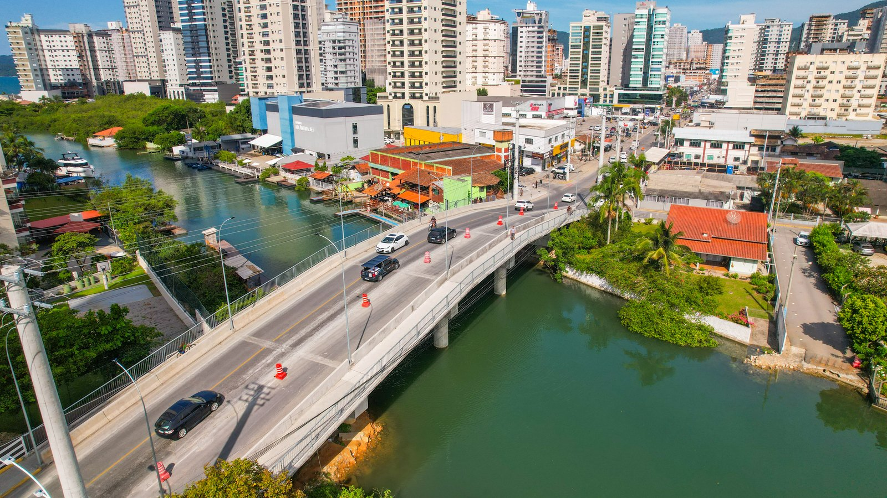
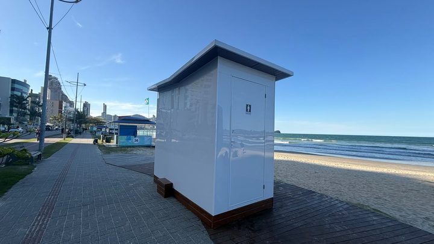

Itapema prevê receita de R$ 954,3 milhões em 2027, e a Prefeitura escreve que o salto de 18,3% vem do empréstimo que banca o alargamento da praia
O orçamento do ano que vem, em discussão na Câmara.
A Câmara marcou para 28 de setembro a audiência de prestação de contas do segundo quadrimestre. Antes dela, fomos buscar o último relatório fechado que a Prefeitura entregou ao Tesouro Nacional, o do primeiro semestre. Ele mostra o orçamento do município autorizado em R$ 1.009.997.143,09, contra os R$ 809,4 milhões da lei aprovada em dezembro. Dos R$ 200,6 milhões acrescentados no caminho, R$ 103 milhões entraram numa linha só, a da infraestrutura urbana.
Em 30 segundos · Modo de Leitura, formato original Santa Informa
O orçamento de Itapema virou o ano em R$ 809,4 milhões.
Até 30 de junho já estava em R$ 1.009.997.143,09.
É um aumento de R$ 200,6 milhões, ou 24,78%.
Isso é normal e se chama crédito adicional.
O que não é comum é para onde foi.
A subfunção Infraestrutura Urbana pulou de R$ 79,28 milhões.
Foi para R$ 182,29 milhões.
São R$ 103 milhões a mais, metade de todo o aumento.
É a linha onde mora a obra da praia.
Mas gastar mesmo ainda gastou pouco: R$ 20,76 milhões.
Isso dá 11,39% do que está autorizado ali.
Do lado da receita, entraram R$ 420,7 milhões até junho.
São 44,55% do previsto para o ano.
As operações de crédito previstas somam R$ 8,93 milhões.
Delas não entrou nada até junho.
A audiência do segundo quadrimestre é 28 de setembro.
Às 18h30, no Plenário da Câmara.
Poder PúblicoPublicada em Redação Santa Informa

O orçamento de Itapema para 2026 foi aprovado em R$ 809.400.000,00. Em 30 de junho, ele já estava autorizado em R$ 1.009.997.143,09. São R$ 200.597.143,09 a mais, um crescimento de 24,78% em seis meses. E o aumento não se espalhou por igual: só a subfunção Infraestrutura Urbana ficou com R$ 103.006.716,44 desse dinheiro novo, ou 51,35% de tudo que foi acrescentado. A conta é nossa, feita sobre o relatório que a Prefeitura entregou ao Tesouro Nacional. Ninguém tinha juntado esses números.
Orçamento não é camisa de força, e mexer nele durante o ano é rotina de qualquer prefeitura. Chama-se crédito adicional, e a própria lei orçamentária autoriza. Em Itapema, a receita prevista para o ano subiu de R$ 809,4 milhões para R$ 944.301.291,50. A diferença que falta para chegar ao R$ 1,01 bilhão autorizado de despesa, exatos R$ 65.695.851,59, é sobra de caixa de anos anteriores. O relatório registra esse valor com o nome técnico de superávit financeiro usado para créditos adicionais. Em bom português: dinheiro que ficou em conta e foi gastar agora.
A subfunção Infraestrutura Urbana começou o ano com R$ 79.280.000,00 e chegou a junho com R$ 182.286.716,44. É onde ficam as obras de rua, drenagem e orla, e é a linha que banca o alargamento da Meia Praia. Só que autorizar não é gastar. Até junho a Prefeitura tinha liquidado ali R$ 20.755.620,79, que são 11,39% do autorizado. Saúde foi de R$ 137,41 milhões para R$ 170,71 milhões, Educação de R$ 289,16 milhões para R$ 311,61 milhões e Segurança Pública de R$ 40,62 milhões para R$ 58,66 milhões.
A cidade arrecadou R$ 420.690.512,99 no primeiro semestre, 44,55% do previsto para o ano inteiro. Os impostos vieram em ritmo de meio de ano: R$ 199.100.374,58, ou 50,93% do esperado. Duas linhas ficaram para trás. As operações de crédito previstas somam R$ 8.930.000,00 e não entrou nada até junho, o que quer dizer que o empréstimo autorizado para a obra da praia ainda não tinha virado dinheiro em conta. E as transferências de capital dos estados, previstas em R$ 42,69 milhões, trouxeram R$ 1,4 milhão, 3,28%. Do lado da despesa, o município empenhou R$ 501,02 milhões, liquidou R$ 344,47 milhões e pagou R$ 337,43 milhões.
O resumo de 30 segundos está no topo e a versão completa é o texto acima. Aqui ficam as três leituras da casa sobre o mesmo assunto.
Clara, a otimista
Uma cidade de pouco mais de 88 mil moradores com orçamento acima de R$ 1 bilhão é um fato bonito de ler. Quer dizer que a economia local está funcionando, que o imposto está entrando e que a cidade tem musculatura para encarar obra grande sem depender só de repasse de fora.
E tem outra coisa boa no meio dos números. O aumento não foi para custeio espalhado: foi concentrado em infraestrutura, que é a parte que fica depois que o mandato acaba. Rua, drenagem e orla são o tipo de gasto que o morador usa todo dia e o filho dele ainda vai usar.
Seu Prudêncio, o criterioso
Merece atenção a distância entre autorizar e executar. Ter R$ 182,29 milhões liberados para infraestrutura urbana e ter liquidado R$ 20,76 milhões até junho são coisas muito diferentes. Com o ano na metade, 11,39% é pouco, e aí só existem duas explicações possíveis: ou a obra está em fase que ainda não gera pagamento, o que é comum em projeto e licitação, ou o cronograma atrasou. A audiência do dia 28 é o lugar certo para perguntar qual das duas.
Vale acompanhar também o lado da receita. As operações de crédito previstas não entraram, e as transferências de capital dos estados vieram a 3,28%. Orçamento se equilibra dos dois lados, e despesa autorizada sobre receita que não chegou vira resto a pagar no ano seguinte.
Uma sugestão útil: publicar junto com o relatório a lista dos decretos de crédito adicional, com a obra que cada um atende. Custa pouco e responde a maior parte das dúvidas antes que elas virem pergunta. Dito isso, é preciso reconhecer o mérito: Itapema entregou o relatório no prazo, com detalhe por função e subfunção, e marcou a audiência dentro do que a Lei de Responsabilidade Fiscal manda. Muita cidade do mesmo porte não faz nem isso.
Caco, o sarcástico
Itapema entrou no clube do bilhão. Agora a cidade tem orçamento de gente grande, trânsito de gente grande e fila de espera de gente grande. Pacote completo.
O orçamento cresceu R$ 200 milhões em seis meses. Se o meu salário fizesse isso, eu também não conseguiria gastar tudo até junho. Difícil é explicar para a esposa de onde veio.
Mas reclamar do quê. A prefeitura tinha R$ 65 milhões de sobra de caixa de anos anteriores e está usando agora, o que já é melhor que gastar o que não tem. Tá devagar, mas é devagar com dinheiro em caixa, que é o melhor tipo de devagar que existe.
Fontes: a dotação inicial de R$ 809.400.000,00, a dotação atualizada de R$ 1.009.997.143,09, a receita prevista de R$ 944.301.291,50, a receita arrecadada de R$ 420.690.512,99 e seus 44,55%, os R$ 199.100.374,58 de impostos, o zero em operações de crédito sobre R$ 8.930.000,00 previstos, os R$ 1,4 milhão de transferências de capital dos estados sobre R$ 42,69 milhões, o superávit financeiro de R$ 65.695.851,59 e os totais empenhado, liquidado e pago estão no Anexo 1 do Relatório Resumido da Execução Orçamentária de Itapema, terceiro bimestre de 2026, na base do Siconfi, do Tesouro Nacional. Os valores por função e subfunção, entre eles os R$ 79.280.000,00 e os R$ 182.286.716,44 de Infraestrutura Urbana, os R$ 20.755.620,79 liquidados e os números de Saúde, Educação e Segurança Pública estão no Anexo 2 do mesmo relatório. As contas de percentual e a comparação entre o aumento total e o aumento da infraestrutura urbana são trabalho nosso, feito sobre esses dois arquivos. A audiência de 28 de setembro, às 18h30, no Plenário, conduzida pela Comissão de Finanças e Orçamento e transmitida pelo YouTube, está no aviso da Câmara de Vereadores de Itapema, de 10 de setembro de 2026. A exigência da audiência quadrimestral está no artigo 9º, parágrafo 4º, da Lei de Responsabilidade Fiscal. A ausência de uma lista de decretos de crédito adicional de 2026 foi verificada por nós na página de transparência da Prefeitura de Itapema, que abrimos nesta sexta-feira. A previsão de R$ 954,3 milhões para 2027 está na nossa matéria sobre a LDO, e o empréstimo que banca o alargamento da praia está na nossa matéria sobre o financiamento de R$ 250 milhões.
O orçamento do ano que vem, em discussão na Câmara.

Itapema · Poder PúblicoOutro gasto da orla que saiu do mesmo caixa.
O outro número que levantamos sobre a Câmara.